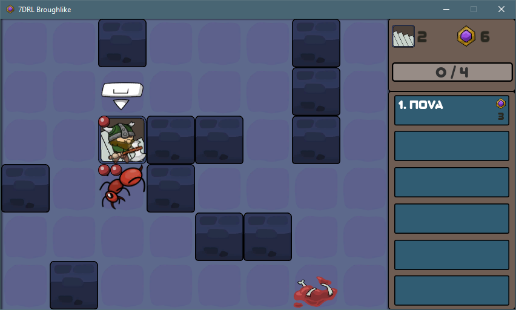
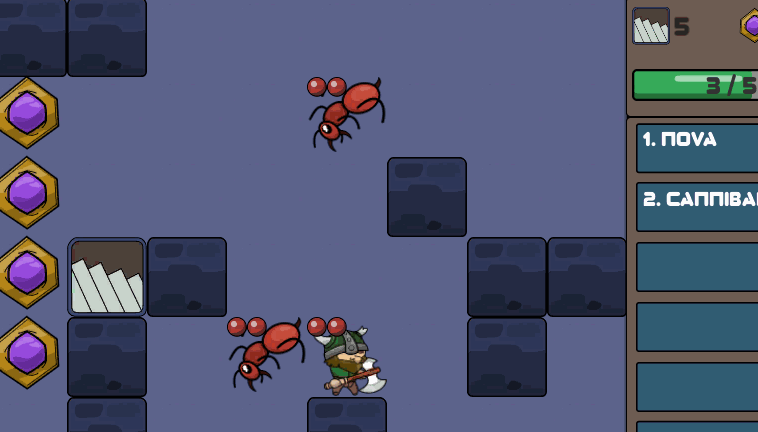
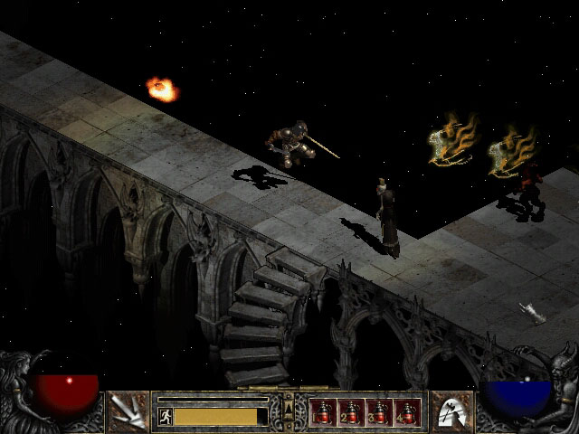
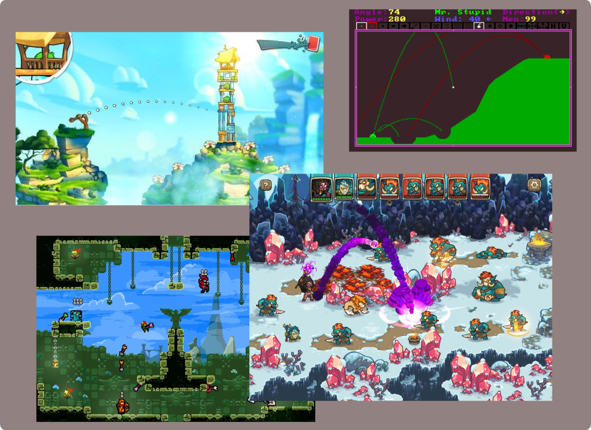
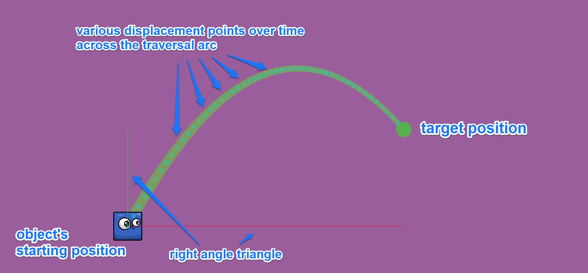
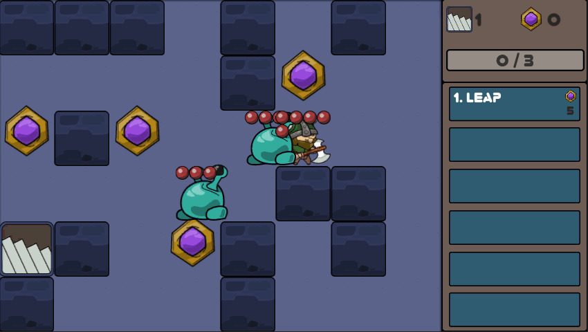

This post should be referred (or) redirected from my itch.io project page.
It's been a while since I've last talked about this project, so much so that people might assume I've already abandoned it. Quite contrary actually, I'm still very much knee deep into development. The game was supposed to be wrapped up within forty more hours or so after the last post, which is essentially about two weeks of work. The reason why that's not happening yet is a lot of things have been going on in my life and I couldn't get much dev hours as I would've wanted. Important life event, failed game jams and difficult job hunting experiences occupied my time a lot over the last two months. Now that I've just wrapped up one of the big features a couple of days ago, I figured it's as good as time as any to check in before I proceed.
So, first of all...
It's getting dark, baby!

Yup, the entire color scheme of the dungeon has been changed into a darker tone. The main reason was, well, it's supposed to be a dungeon filled with scary monsters and shifting floors. The previous yellowy color scheme just feels like you're strolling through an ancient, faraway, desert temple. Which works fine by itself, but the vibe I wanted to go for is quite similar to Diablo 1 or 2, where you just couldn't know what dangers or riches await on every descent.
Plus, the player is now a green Viking dude holding an axe, which will probably never get used physically in the entire game. The previous blue alien-like guy with a pot belly is now revamped into an enemy monster with it's own special ability. We'll talk more about him in a minute, but for now, let's dive into the new spells.
Nova spell
I've been thinking about adding a range offensive spell of some sort for a while. Creating a spell which shoots out a projectile in one cardinal direction is easy to implement for sure. But at the same time, I don't really want to undermine the main mechanic of the game, which is getting close to the enemies in order to bring them down while considering about your positioning on the map every single turn. As a balancing act, I can make that projectile spell expensive to cast in order to discourage the player from using it frequently. But, that would probably make the game feel punishing just to do such a simple thing you can always see everywhere else.

So, the solution becomes the beams (or waves) of energy that radiate outwards into all four cardinal directions of the player. It costs 3 gems to cast, won't go through the walls and hit everything in the straight lines with 1 damage. With enough gems in your pocket, you as the player can still lay waste to multiple smaller enemies if you can position yourself quite right. But you're still vulnerable to incoming attacks if they can get close enough to you since casting the spell advances the turn.
I thought about adjusting the gem cost a little bit. But you can probably get only one to two enemies, maybe three at most in one shot. Plus, with a low damage rate of 1, you won't be able to overpower tougher enemies in the late game without the help of other spells either. So, 3 gems works for now.
Leap spell
Now, here comes the primary focus of this post, and also one of the reasons why very little progress was made during this past couple of months. I wanted to include a spell which allows the player to target a walkable/passable tile, jump onto it and damages all surrounding enemies upon landing there. There's an emphasis on jump here by the way. Quoting Diablo again, I have to acknowledge that I'm closely imitating one of the Barbarian's skills with the similar name of course. I can simply lerp (linear interpolate) the player from one position to another and call it a jump. But, no no no! I've already done it with Blink. That's not what I want for Leap.

In a game where moment to moment actions are more focused rather than fast movements, adding a spell which can allow you to traverse a long distance can sound a bit contradictory. Consider it as a form of top tier/ultimate ability, where you're moving and damaging enemies at the same time. Whichever the case, I just wanted to implement it and see how it feels in the game.
Besides, I've never done a parabolic arc movement in games before and I've always wanted to do it some form or another. So, it'll be a good learning opportunity for me as well. I mean, Angry Birds has this, most of the RTS and tower defense games have this, pretty much all the games which have a form of archery have this. How hard could this be, right?
Well, spoiler alert! It's VERY hard.

A bit of background story
Naturally, I started researching the basic physics principles behind it, like projectile motion and kinematic equations. Most of the theories didn't make much sense to me without a proper context to apply them. I mean, I think I understand them, but most of the time, I just feel like I'm not smart enough to implement them on my own. So I did what most modern laymen would do, turn to YouTube and forums for direct guidance on how to properly implement parabolic projectile motion in games. There's obviously no shortage of resources to consume of course. Sebastian Lague's videos on kinematic equations are pretty good. (I'm a constant follower of his work.) This guy made a small game about artic foxes with pouncing (jumping) as a main mechanic. There are tons of tutorials, explanations and code examples from realistically shooting an arrow to predicting the trajectory of a projectile. Even so, most of them didn't found to be useful for me either.
One of the main thing I wasn't really satisfied with most of these tutorials (not all of them, but most) was, they either rely too much on a specific game engine and its physics components without explaining very much about the math behind it, or just straightaway showcase the working code that implemented the proper motion equations and give no explanation at all. Most of them were like; "if you want to shoot a projectile, apply some initial velocity to it like this and let physics engine take care of the rest." or "if you want to find out where the projectile would land after applying a certain velocity in a certain angle, plug in those formula and you're good to go." I even found a video which literally explained and coded just like another video. The most common theme is of course to treat the object in motion as a projectile (a cannon ball, a rocket, an arrow, or whatever), which means they focus on calculating the initial velocity and angle of the object and have very little control once it's in motion. That's not exactly what I wanted either.
Then I slowly realized that there are actually different ways to implement the parabolic arc motion. They're all based on one basic displacement formula. But, depending on what you want to achieve, you're gonna have to think about which values to use as inputs and how to derive the unknown values into independent x and y components.
The design process
So, I stepped back a little bit and think about what I want the object (rather, the player) to behave, and also allows me to control different aspects of the entire traversal movement.
- I know the start and end positions of the object very well.
- I want to control the angle of the trajectory, which of course should be higher up from the target position. Otherwise, it'll just be shooting in a straight line.
These sound trivial. But what I wanted to do depending on these inputs is to calculate various displacement values of the object across the traversal arc over time, so that;
- I'll be able to render the full trajectory arc line properly in order to give visual feedback of how the object is going to move,
- and control the movement of the object across the arc at any given point in time just by sampling one of those same displacement values.

I know it's a lot of rambling and much of it won't make sense without additional explanations with proper mathematical formula. I still don't fully understand much of it even after I've managed to make it work. I hope that references you've found in this article would give you a good runway when you're trying to attempt your own implementation. All I want to say is that it's not just about throwing an object from one point to another. And you should try to lay out concrete intentions, either as a designer or a programmer, and do a thorough research before diving into further implementation details.
So after about 18 hours of various prototype iterations over a couple of weeks, here's what I got. I'm not gonna go through all of my prototypes here just to save your sanity. But I do want to note that this video by Gingerageous Games brought me closest to what I wanted to achieve.

Yes, as you can probably guess, control over the movement is a big part of my requirement. Notice the displacement values array in the Inspector is re-evaluated in real time? All I have to do to move the object across the arc is to interpolate between those coordinates. It doesn't matter whether it's moving forward or backward. And the same array is used for both movement and rendering the trajectory line as well.
The final solution is far from perfect, and there were a few kinks I had to additionally work out when putting everything together in the game. But it works well enough, and also allows me to design everything in a nice modular way so that the same exact logic could be easily reused aside from the Leap spell.
Let's time jump a dozen more dev hours and check out how it turned out.

I have to say that the spell looks kinda cool in action. Just wanna note down a couple of things here.
A keyboard controlled reticle pointer is used for targeting the spell. Other than the fact that it took several hours just to make the reticle work as smooth as it is, I'm not gonna dive deeper into it anymore. (This article is already lenghty as it is.) Though you might be wondering why I chose keyboard to control the reticle instead of the mouse on a PC game. It might be so much easier and precise to control the spell, right?
Well, yes, it might. The thing is, there's no other mechanic or feature in the game that requires mouse input. The movement is controlled by keyboard, the spells hotbar has numerical bindings in each slot, action confirmation is with space bar. Even the menu navigation will be through keyboard. So it'll be quite jarring for the player to reach out to the mouse just to cast this single spell. Trust me, I know it is. Because I've seen a few jam games done this, and it really throws me off guard.
The spell costs 5 gems and deals 1 damage to surrounding enemies upon landing at the target tile. You can reach anywhere on the entire map with it. The only limitation is directly onto the walls or the enemies. It really feels like it has a good offensive and utility purposes, doesn't it. The high cost would, hopefully, prevents the player from overusing it.
Alien enemy
Remember this blue guy with beady eyes and a pot belly. Well, he used to be a player controlled character, and now he's an enemy.

And he's also gonna be the first of the enemy monsters to have a specialized behavior. All the enemies in the game, except for the red ants, will have a special behavior attached to them to make them unique in their own way. Since he looks like an alien with two eyes poking out of his body, I'm thinking about giving him some sort of weird, replication behavior. In other words, he'll be split into two smaller creatures of the same kind, with fewer health points, when he dies.

If you didn't notice from the footage, the same parabolic trajectory logic is reused when the Younglings (the smaller aliens with 1 health) are spawned. They may not look very threatening by themselves individually, but since they still behave like all the other enemies and deal 1 damage, a couple of Aliens can easily explode into a large number and ruin your day if you're not careful.
Conclusion
I think it's a good point to leave things here for now. The actual number of updates within this couple of months are quite few, but I'd say they're all relatively big, and give me a lot of solid ground works for future games as well.
There are still a number of smaller updates, refinements and balancing works as well. But I don't think they have any interesting backstories to deserve your attention. I mentioned before that I'm gonna work on this project for a full hundred hours. Well, I'm already at 90 hours mark and I still have a whole bunch of things to do, so I guess I'm gonna have to be very efficient for the rest of the journey. But it's totally fine to overshoot for about ten hours or so as well. The important thing is to finish something presentable and learned a boatload of lessons along the way.
The next post is obviously gonna be the last, so stay tuned.